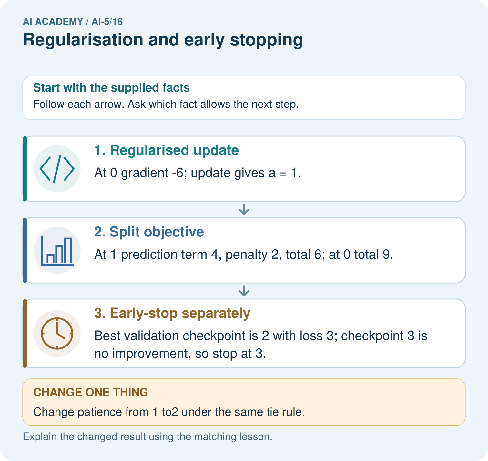

AI Academy · Level 5 · Grade 10 · Week 16 · Workbook
Regularisation and early stopping
Learn to understand, design, build, test and explain AI systems responsibly.
Project: Image-pattern Network Investigation
Workbook · 1 of 12
Recall and choose your starting point
Try the recall before opening notes. Then use a different colour or a labelled second line to correct your explanation.
Training and validation curves
Without opening the old lesson, explain one key idea from Training and validation curves. Give an example and a mistake that the idea helps you avoid.
Batching and epochs
Without opening the old lesson, explain one key idea from Batching and epochs. Give an example and a mistake that the idea helps you avoid.
Gradients with a numerical check
Without opening the old lesson, explain one key idea from Gradients with a numerical check. Give an example and a mistake that the idea helps you avoid.
Workbook · 2 of 12
Practise with fading help
Use W2: Trace the next update for Regularisation and early stopping. Record the answer once; the lesson and workbook refer to the same attempt.
| Given inputs | Procedure I chose | Middle steps | Result and check |
|---|---|---|---|
Workbook · 3 of 12
Individual reasoning check
Use the worked case for Regularisation and early stopping. Proposed explanation: “Zero prediction error means no regularised update”. Decide whether this explanation is supported. Point to the step or supplied fact that decides; explain your repair if needed.
Workbook · 4 of 12
Independent transfer case
Independent case: Transfer both rules independently
For a new objective J(a) = (a - 2) squared + a squared, gradient 4a - 4, start a = 0 and take one step at rate 0.25. Give new a, prediction error term, penalty and total J. Separately apply patience 2 with strict improvement to validation values [3, 2, 2, 2, 1] at epochs 0 to 4; report the stop and restored epochs.
Attempt this case before feedback. Record any help. Earlier examples below are further practice; a case already practised with feedback cannot establish fresh transfer.
Workbook · 5 of 12
W1 Separate the objective terms
At v = 2 and lambda = 0.5 in the lesson, compute prediction MSE, penalty, total objective and total gradient. Does zero training MSE make this gradient zero?
Workbook · 6 of 12
W2 Trace the next update
Start v = 1.6 with lambda = 0.5 and rate 0.1. Calculate both gradient contributions, new v and new prediction MSE.
Workbook · 7 of 12
W3 Apply patience without peeking
Validation MSE at epochs 0 to 7 is [4, 2, 1.5, 1.6, 1.4, 1.45, 1.46, 1.3]. Apply the lesson policy with patience 2. Give the stop epoch, restored epoch and why the listed epoch 7 cannot change this decision.
Workbook · 8 of 12
W4 Transfer both rules independently
For a new objective J(a) = (a - 2) squared + a squared, gradient 4a - 4, start a = 0 and take one step at rate 0.25. Give new a, prediction error term, penalty and total J. Separately apply patience 2 with strict improvement to validation values [3, 2, 2, 2, 1] at epochs 0 to 4; report the stop and restored epochs.
Workbook · 9 of 12
W5 Compare penalties fairly
A team compares lambda 0 and lambda 0.5 by choosing whichever has the smaller penalised training objective. Explain why this does not establish the better prediction model and name a suitable development comparison.
Workbook · 10 of 12
Project checkpoint and reflection
Add a labelled regularisation and early stopping evidence sheet to Image-pattern Network Investigation. Show how you can separate a weight penalty from prediction error. Use the supplied fictional case and keep its inputs, intermediate steps, calculation or prediction, and limitation. Connect this record to last week’s record; a matching answer without a trace is insufficient.
Workbook · 11 of 12
Feedback, return check and learning record
| Evidence | My record |
|---|---|
| Worked alone / hint / model | |
| First step I repaired and why | |
| New case checked later; date and result | |
| What I can now explain without notes | |
| One remaining question |
Revisit this idea with your teacher after a delay. Familiarity is different from explaining and using it on a changed case.
Workbook · 12 of 12
Pictorial case practice: Regularisation and early stopping
Separate a regularisation penalty from prediction loss and an early-stopping rule.
Toy objective J(a)=(a-3)²+2a²; start a = 0; gradient 6a-6; rate 1/6. Separate validation losses:[5, 3, 3, 4], patience 1, no ties as improvement.
All inputs and outcomes in this worked example are invented classroom data; no real model run is claimed.

Why should the penalty value not be reported as validation error? Point to the relevant step in the picture, then write the changed result and the rule or evidence that supports it.
Support used: alone / hint / worked example. This record is practice evidence.
Project connection: For your Image-pattern Network Investigation, save the input, procedure, observed result and limitation of this check. Label this worked example as practice; use a different, previously unreviewed case when checking independent understanding.